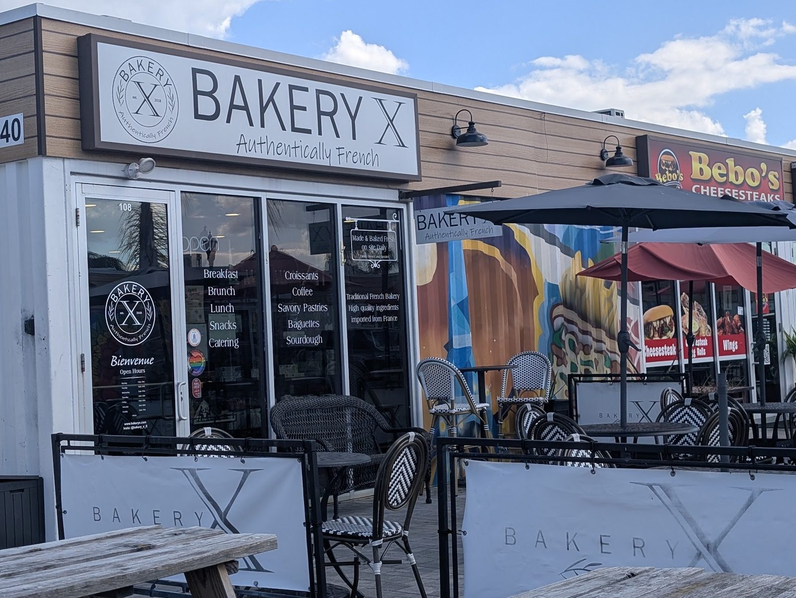
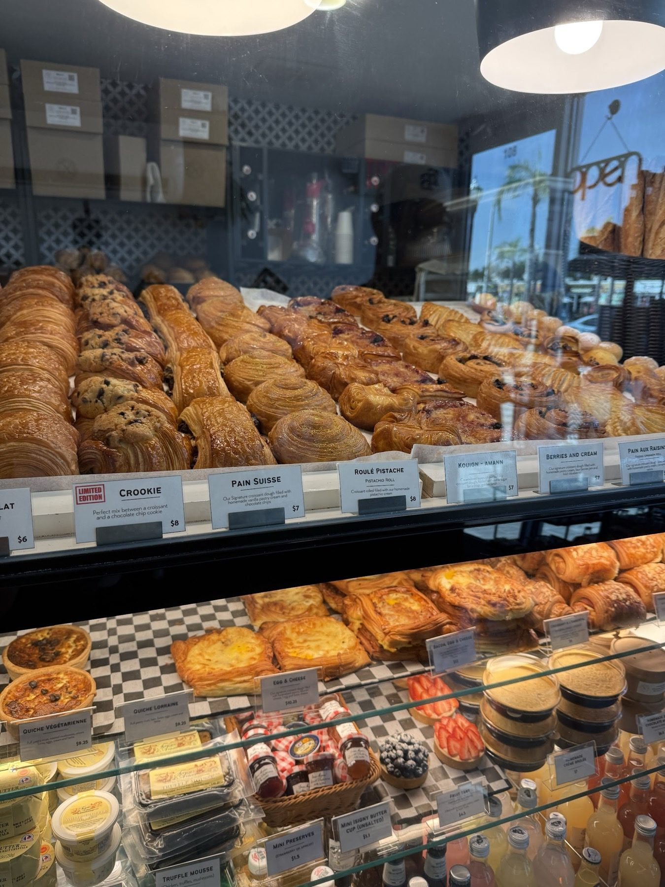
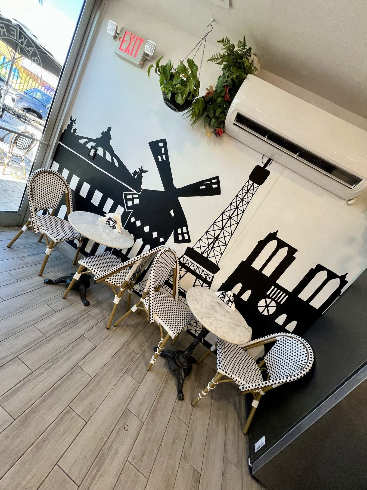
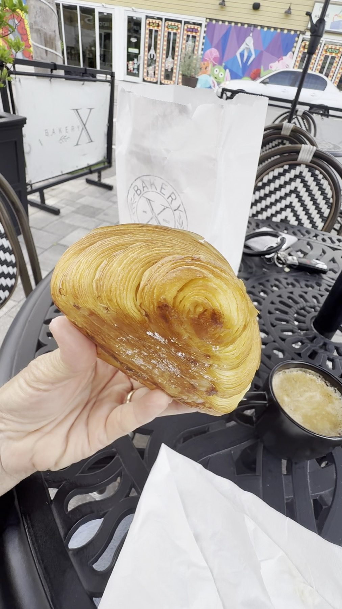
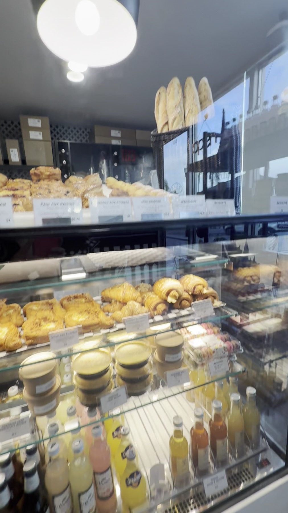

Bakery
French pastries of layered dough, baked over three days.

French bakery · The Krate, Wesley Chapel
Layered pastries baked over three days with French butter, plus sandwiches and coffee.
Baked over three days
Imported butter, cheese, macarons and French cookies are on the shelf too.
French pastries of layered dough, baked over three days.

Coffee, sandwiches and quiche, with a seat on the patio.

Baby showers, office breakfasts, open houses and brunches.





4.8 ★ · 535 Google reviews
I visited Bakery X and had a wonderful experience. The café has a charming French vibe, and the service was excellent, friendly, attentive, and welcoming. We ordered the pistachio croissant and the crème brûlée, and both were absolutely outstanding. The crème brûlée was smooth, creamy, and silky, with a perfectly balanced sweetness.
I absolutely love this bakery! ❤️ The service is always wonderful, and I’ve been a loyal customer since before they even opened their location at Krate. They have such a beautiful bakery with an amazing selection of delicious French pastries, breads, and other goodies. Everything I’ve tried has been wonderful, but their croissants are definitely my favorite!
I went there the other day and today I’m writing this review because I can’t get over the experience I had there. The atmosphere, service, food, place overall everything was just amazing!! I ordered the Pain Suisse and the Croissant Aux Amandes oh both were so so so delicious!🤤 I think I found my favourite spot!

Our story
A passion project since 2018, in a little store at the Krate container park. Coffee, pastries and a slice of the French way of life.
Drop in
5840 Grand Oro Ln Unit 108, Wesley Chapel, FL 33544
Unit 108, in the container park in Wesley Chapel.